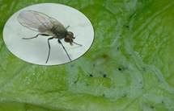

| Home |
| MUSTARD |
| 1. Mustard aphid |
| 2. painted bug |
| 3. mustard sawfly |
| 4. green peach aphid |
| 5. pea leaf-Miner |
| 6. Bihar hairy caterpiller |
| 7. Cabbage butterfly |
| 8. diamondback moth |
| questions |
| Download Notes |
PESTS OF MUSTARD (Brassica) :: Major Pests :: Pea Leaf-Miner
5. Pea Leaf-miner: Chromatomyia horticola (Agromyzidae: Diptera)
Distribution and status: Northern India
Host range: Cruciferous plants, antirrhinum, nasturtinum, pea, linseed (Linum usitatissimum L.) and potato (Solanum tuberosum L.)
 |
Bionomics: The adults are two-winged flies having greyish black mesonotum and yellowish frons. It is active from December to April or May and is believed to pass the rest of the year in soil, in the pupal stage. The adults emerge at the beginning of December and after mating, start laying eggs singly, in leaf tissues. The eggs hatch in 2-3 days and the larvae feed between the lower and upper epidermis by making zig-zag tunnels. Maggot after 5 days pupates within the galleries. The adults emerge in 6 days and lifecycle is completed in 13-14 days. The pest passes through several broods from December to April-May.
Damage symptoms: The large number of tunnels made by the maggots interferes with photosynthesis and proper growth of the plants, making them look unattractive. If the attacked leaves are held against bright light, the minute slender larvae can be seen feeding within the tunnels
Management: Spray 1.0 L of dimethoate 30 EC in 750 L of water per ha and repeat spray at 15 days interval. A waiting period of 20 days should be observed for picking of pods.